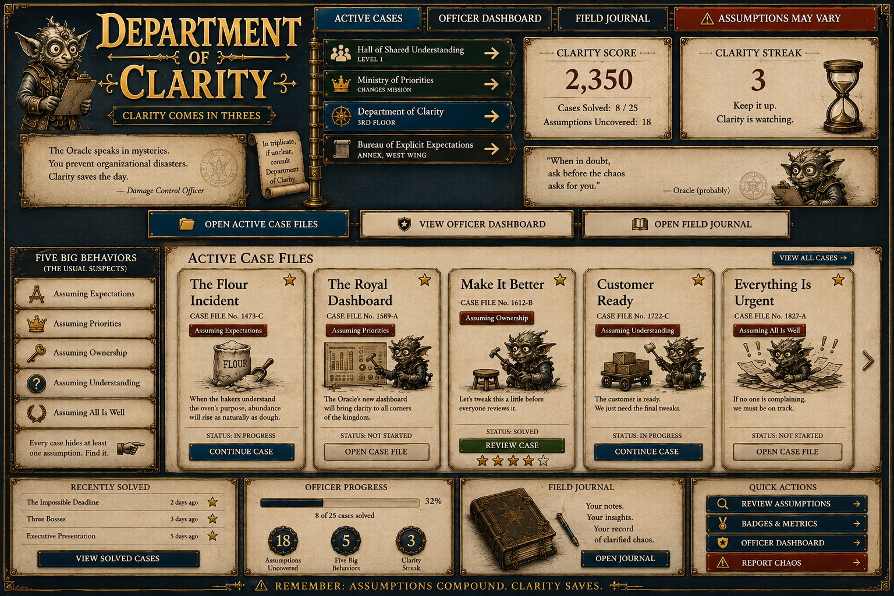
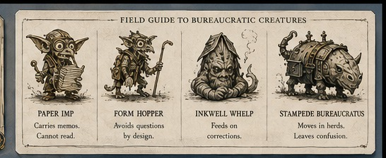

The Oracle speaks in mysteries. You prevent organizational disasters.
REMEMBER: Assumptions compound. Clarity saves.
ACTIVE CASE ARCHIVE
Cases awaiting clarification
Choose a case file. Five cases appear at a time so every title, behavior, status, and action remains easy to read.

0%
OFFICER DASHBOARD
Progress & Records
Your current rank, mastery, case history, and Five Big Behavior progress.
Completed0/25
Average0%
RankProbationary Clarifier
Five Big Behaviors
Complete all five cases in each category.
FIELD JOURNAL
Saved Reflections
Record the assumption you noticed and the question you will use next time.